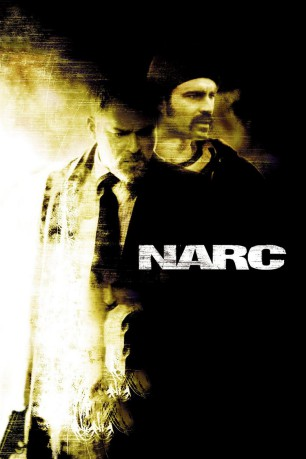
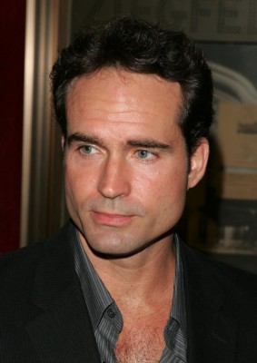
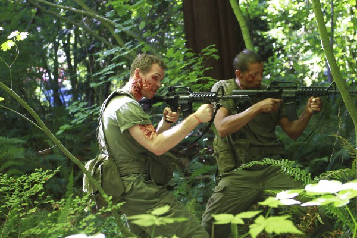
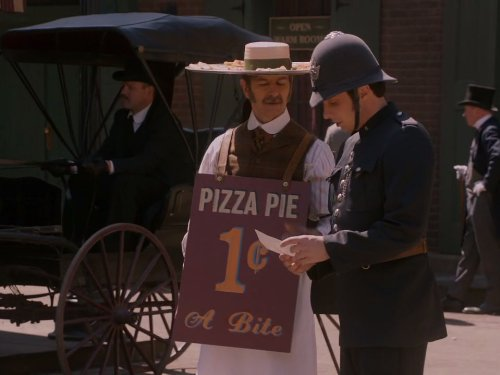

#2578 Narc
 
 IMDB-Wertung: 7.2 / 10
IMDB-Wertung: 7.2 / 10  Metascore: 70
Metascore: 70 
Nick Tellis (Jason Patric) arbeitet als verdeckter Ermittler in der Drogenszene Detroits. Bei dem Versuch, einen Dealer zu stoppen, erschießt er nicht nur diesen, sondern verletzt dabei auch eine hochschwangere Frau, die daraufhin ihr Kind verliert. Anderthalb Jahre später soll Tellis wieder die Arbeit aufnehmen. Captain Cheevers (Chi McBride), sein Vorgesetzter, stellt ihm einen Schreibtischjob in Aussicht, allerdings unter der Bedingung, dass Tellis sich zunächst noch eines Mordfalls im Drogenmilieu annimmt. Vor kurzem wurde der Ermittler Michael Calvess (Alan Van Sprang) tot aufgefunden. Tellis soll nun gemeinsam mit Calvess' Partner Henry Oak (Ray Liotta) die Umstände aufklären. Dabei muss sich Familienvater Tellis nicht nur der eigenen Vergangenheit stellen, sondern auch mit Oak zurechtkommen. Denn dieser will den Mord an seinem Partner aufklären, unabhängig davon, wie viele Regeln er brechen muss...
Jahr: 2002
Dauer: 105 Minuten
FSK: 16
Land: USA Studio: Lions Gate FilmsTonspuren: DTS - ,
Untertitel: Deutsch,
Auflösung: 1080p (1920x1040) Größe: 10240 MB
Genre: Krimi, Mystery, Thriller
Regisseur: Joe Carnahan
Drehbuch: Joe Carnahan
Soundtrack: Cliff Martinez
Darsteller:
-  Jason Patric als Nick Tellis
-  Lloyd Adams als Walter Dandridge
- Alan C. Peterson als Freeman Franks
- Karen Robinson als Liz Detmer
- Chi McBride als Captain Cheevers
- Alan Van Sprang als Michael Calvess
- Krista Bridges als Audrey Tellis
 Ray Liotta als Henry Oak
Ray Liotta als Henry Oak Paulino Nunes als Officer Ellis Breaves
Paulino Nunes als Officer Ellis Breaves John Ortiz als Octavio Ruiz
John Ortiz als Octavio Ruiz Kevin Rushton als Meth Dealer
Kevin Rushton als Meth Dealer- Stacey Farber als Young Kathryn
- Anne Openshaw als Kathryn Calvess
- Bishop Brigante als Eugene 'Deacon' Sheps
- Busta Rhymes als Darnell 'Big D Love' Beery
- Dan Leis als Elvin Dowd
- Meagan Issa als Little Girl
- Lina Giornofelice als Jeanine Mueller
- Booth Savage als Cecil Mitchum
- Gavyn Donaldson als Tellis' Infant Son
- Myles Donaldson als Tellis' Infant Son
- Thomas Patrice als Officer Marcotte
- Garry Robbins als Biker
- Lilette Wiens als Strung Out Woman
- Omar Samuels als Crackhead Junkie
- Mauricio Rodas als Strung Out Man
- Darren John als Drug Dealer
- Steve Hunt als Porn Shop Dude
- Marilo Nunez als Ruiz' Smoldering Squeeze
-  Tony De Santis als Medical Examiner Art Harlan
- Carson Durven als Leonard 'Leo Lee' Leflore
- Donna Croce als Oak's Wife
- Mallory Mahoney als Calvess' Daughter
- Carly Marie Alves als Lilian Rose Calvess
- Richard Chevolleau als Latroy Steeds
- Ken Rudulph als Cop , uncredited
- Bradley Sawatzky als Cop , uncredited
Datei: X:\2002\Narc (2002, FSK16, 1920x1040).mkv seit 24.11.2015
Festplatte: HD 1996-2002
 Es gibt insgesamt 93 Filme in der Gruppe '2002'
Es gibt insgesamt 93 Filme in der Gruppe '2002'